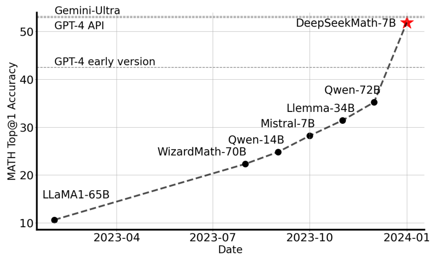
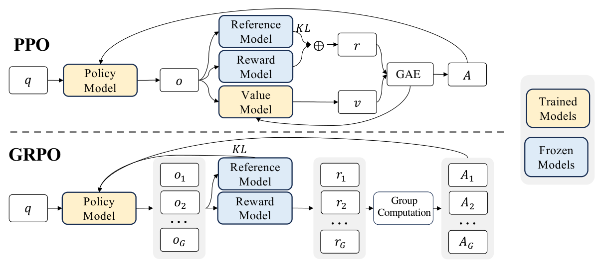
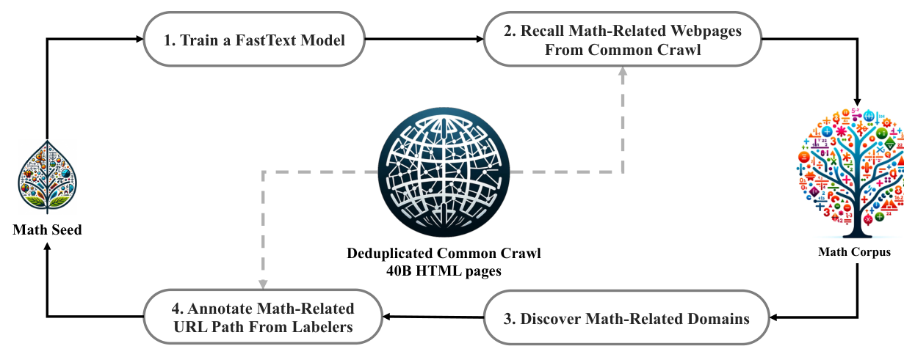
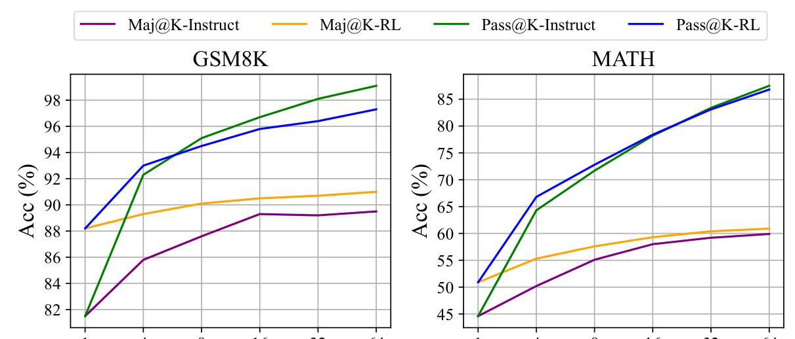

五分钟重建
PPO 通常用 Critic 估计价值基线。大语言模型再配一套价值网络，会增加显存和训练成本。GRPO 改用同一道题的一组回答作为比较基线。
同题多次作答
从旧策略采样一组回答，给每条回答打奖励分。
组内比较
用奖励减去组均值，再按组标准差归一化，得到相对优势。GRPO 因此省去独立 Critic。
更新生成概率
优势进入裁剪策略目标。参考模型的 KL 正则单独保留。
具体例子（教学假设）：同题四个回答的奖励是 [1,1,0,0]。均值为 0.5，标准差为 0.5。忽略稳定除数后，优势是 [+1,+1,-1,-1]。这里比较的是奖励差，不只是名次。
边界：省掉 Critic 不等于总显存必定减半。论文中 Pass@K 的观察也只支持其特定实验下的概率重分配解释，不能证明所有 RL 都无法扩展解题能力。
先预测，再展开答案
四条回答全得 1 分时，组相对优势是什么？是不是整个训练目标都没有梯度？
查看机制解释
组相对优势全为零，策略 surrogate 部分没有这组回答的区分信号。KL 正则仍可能产生梯度，所以不能把两者混为一谈。
关掉提示后解释：GRPO 去掉了哪个模型？如果奖励模型还在，为什么这不矛盾？
2026-10-04：讲解与练习待试用，本次未进行理解检验；此处不记录复测通过。
一页看懂
02问题
传统观点迷信 arXiv 论文预训练，忽视网页潜力；传统 PPO 强行用同尺寸 Critic 预测末端稀疏奖励的逐 token 绝对价值，显存翻倍且噪声极高；离线 RFT 只有正向更新且缺乏探索。
方法
从 Common Crawl 迭代清洗 120B token 高质量数学语料（DeepSeekMath Corpus）；提出 GRPO，同一问题采样 G 个输出，用组内相对均值与方差归一化计算优势，砍掉 Critic 并将 KL 惩罚独立外置。
结果
7B 纯模型推理在竞赛级 MATH 达 51.7%（Top-1），Maj@64 达 60.9%，逼近 GPT-4；证明代码基座对数学强迁移，且揭示 RL 核心是重塑分布把稀有正确解推向前列（Pass@K 不变但 Maj@K 跃升）。

DeepSeekMath 用数学数据预训练、监督微调和 GRPO 提升数学推理；GRPO 用同题多次作答的相对奖励代替独立 Critic。
关键机制：开除 Critic 价值模型
03传统 PPO 必须同时在显存常驻 Actor、Critic、Ref、Reward 四个模型，其中 Critic 往往与 Actor 同等体量。GRPO 彻底丢弃 Critic：

| 对比维度 | 传统 PPO | GRPO（本方法） | 机制差异收益 |
|---|---|---|---|
| 驻留模型 | Actor + Critic + Ref + Reward | Actor + Ref + Reward | 彻底移除 Critic 网络，节省约 50% 显存 |
| 优势基准 Baseline | 参数化价值函数 V_ψ(s_t) | 同题 G 组输出得分均值 mean(r) | 无参数开销，完全消除绝对分数值的校准偏差 |
| KL 散度处理 | 塞进每步奖励 r_t - β log(...) | 独立移出到外层 Loss 作为正则项 | 避免 KL 惩罚污染任务相对优势估计 |
机制深入：统一梯度系数与网页挖掘
04论文将各类微调算法统一在统一梯度范式下：∇_θ J(θ) = E [ 1/|o| ∑_t GC(q, o, t) · ∇_θ log π_θ ]。不同算法的核心分水岭在于数据源是离线还是在线，以及梯度系数 GC 是否提供动态正负惩罚：
| 微调方法 | 数据采样源 | 奖励形式 | 梯度系数 GC 特性 |
|---|---|---|---|
| SFT | 离线人类演示 | 无 | GC ≡ 1（恒定正向，无探索） |
| RFT | 离线旧策略 π_sft | 规则（对/错） | 对=1，错=0（只奖不罚，无在线探索） |
| Online RFT | 在线实时策略 π_θ | 规则（对/错） | 对=1，错=0（有在线探索，但缺乏负向惩罚） |
| GRPO | 在线实时策略 π_θ | 模型 / 规则 | 组内标准化相对优势 A_hat（动态奖优惩劣） |

证据与边界：Pass@K 揭示的真相
05在竞赛级 MATH 测试中，7B 模型 Top-1 达到 51.7%，超越 Minerva 540B 与开源 70B 系列。但论文最深刻的洞察来自 SFT 与 RL 模型的采样消融实验：

边界与代价：
- 零方差失效边界：若某道难题全错（全 0）或某道水题全对（全 1），组内标准差趋近 0，相对优势归零，梯度消失。GRPO 极度依赖有难度梯度的题目集；
- 几何推理短板：纯文本预训练与网页数据在空间拓扑与图形几何上存在偏差，三角形/椭圆类题目显著弱于闭源通用大模型；
- Few-shot 扩展受限：受限于 7B 体量，少样本提示对性能的拉升幅度弱于 GPT-4。
卡壳点与解答
06Q1：为什么丢弃 Critic 改用组相对打分，不仅省显存，而且天然契合奖励模型的本质？
- 解答：
- 显存层面：LLM 的强化学习中，Critic 网络通常需要拥有与策略模型（Actor）相同的参数量与嵌入维度才能准确表征上下文价值，丢弃独立 Critic 可省去其参数、优化器与反向图成本；总显存节省比例取决于训练栈，不必定为一半；
- 建模稳定性：在数学等长链推理中，奖励通常是延迟到结尾的稀疏二值信号（对/错）。Critic 强行去预测每个 token 的绝对长期价值 $V(s_t)$，噪声极高且极易过拟合；
- 契合 RM 训练范式：主流奖励模型（Reward Model）是通过成对比较数据（Pairwise Preference，如 Bradley-Terry 目标）训练出来的。它天生擅长的是在同一个 Prompt 下给不同候选回答排序（相对大小），而不是输出具有绝对物理意义的校准标量。GRPO 的组内均值中心化与方差标准化，恰好顺应了奖励模型的比较本质。
Q2：在 Outcome 模式下全对或全错时，GRPO 与传统 PPO 的梯度行为有何不同？
- 解答：
- GRPO 的行为：当 64 个回答全为 0 分或全为 1 分时，分子 $(r_i - \text{mean}(\mathbf{r})) = 0$，且标准差 $\text{std}(\mathbf{r}) \to 0$（加微小常数 $\epsilon_{div}$ 防止除零），归一化后的优势值 $\hat{A}_{i,t} \equiv 0$。策略梯度的 surrogate 部分完全消失，只剩下策略与参考模型间的 KL 正则惩罚项。因此，完全做不对的超级难题或闭眼都能做对的白给题，在 GRPO 阶段几乎不贡献策略探索的有效梯度；
- 传统 PPO 的对比：PPO 维护了独立的价值网络 $V(s_t)$。即使最终的回报全部为 0，只要每一步的状态估计 $V(s_t)$ 不为 0，就会计算出非零的 TD 误差（$r_t + \gamma V(s_{t+1}) - V(s_t)$），从而强行产生梯度。但由于这种梯度建立在稀疏末端奖励的噪声估计之上，反而容易带来虚假的策略漂移破坏已有能力。
Q3：如何看待「Pass@K 几乎没变，Maj@K 大幅跃升」这一现象？
- 解答： 先按论文 Figure 7 的范围读：其模型、数据与有限采样 K 下，Maj@K 提高而 Pass@K 变化较小。它支持该实验主要提高已有正确解的采样概率。有限 K 次没采到，不等于正确解的概率严格为零，也不能证明任意 RL 都无法形成新能力。 教学类比：若正确路径原本占较小概率，GRPO 可以让它更容易被采到；“搬运概率质量”说明这一种改进方式，不是一条覆盖所有 RL 的定律。
关联与来源
07PPO
GRPO 的直接理论基石：继承了重要性采样裁剪目标（Clipped Surrogate Objective）以防止策略单步漂移过激；GRPO 的改动在于彻底裁掉 Critic 价值模型与 GAE，改用组内相对归一化估计优势，并将 KL 惩罚独立外置。
GeoAnchor
空间几何推理的强化对齐应用：GeoAnchor 在第四阶段强化学习中，直接采用了 GRPO + pattern reward 算法来端到端优化多模态模型对不同空间潜变量模式的选择策略。
U-OPSD / S²VOPD
对齐信号来源的范式分叉：U-OPSD / S²VOPD 走的是模型自身自构造不对称信息差（自投票轨迹 / 图像退化降噪）进行逐 token 稠密教师分布蒸馏；GRPO 则是在策略采样组内计算标量相对奖励以策略梯度优化。
- 完整笔记
- notes/papers/2024-deepseekmath.html
- 源文件
wiki/papers/2024-deepseekmath.md- Zotero 深链接
- zotero://select/items/XQHXBPT7（citekey:
shaoDeepSeekMathPushingLimits2024）